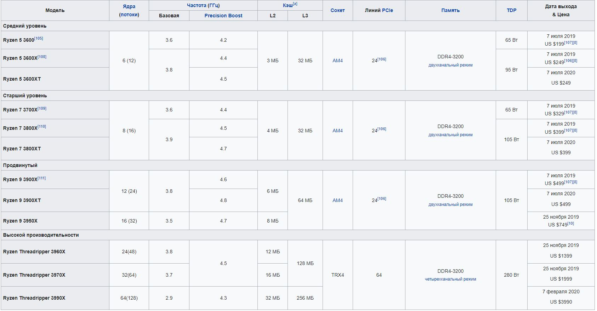
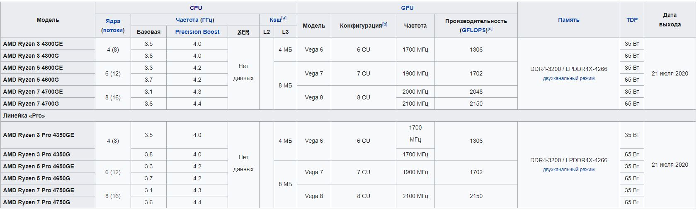
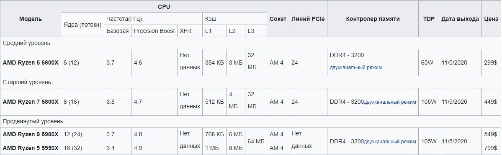

Рассмотрим процессоры которые вышли за последние 3 года, так как они являются самыми свежими для сборки в данный момент, все упирается в выделенный бюджет
В 2019 году вышли процессоры Ryzen на микроархитектуре Zen 2, имеющие 4—16 ядер, для них освоен техпроцесс в 7 нм, отличный от Zen+, что обеспечило улучшенный контроллер памяти и частотный потенциал процессоров вкупе с увеличенной производительнсстью на данной архитектуре, а также Ryzen Threadripper (24—64) на новом сокете TRX4 и микроархитектуре Zen 2. Процессоры с индексом "G" по-прежнему получили встроенного графическое ядро Vega, несколько улучшенное в сравнении с предыдущей серией.

В 2020 году компания представила 4000-серию процессоров Ryzen (и их урезанные по энергопотреблению версии с приставкой "GE") на микроархитектуре Zen 2 со значительно переработанной интегрированной графической подсистемой Vega на Socket AM4.

В 2021 году компания представила 5000-серию процессоров Ryzen на микроархитектуре Zen 3 с несколько измененной в сравнении с 4000-серией интегрированной графической подсистемой Vega на Socket AM4, которые обозначаются индексом "G" (и их урезанные по энергопотреблению версии с приставкой "GE"), а также решения без графической подсистемы. В сами процессорные ядра внесли значительные изменения, чем заметно улучшили производительность.
